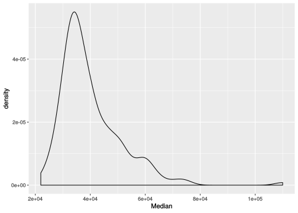
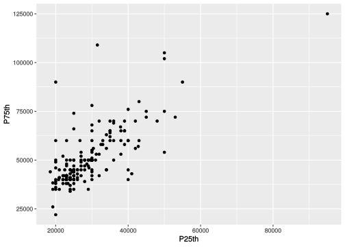
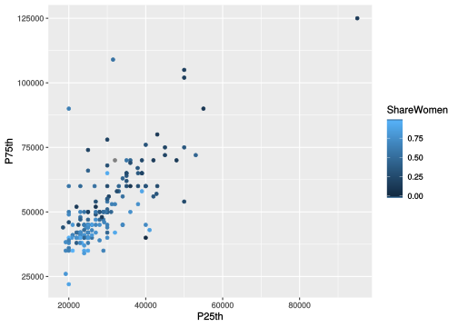
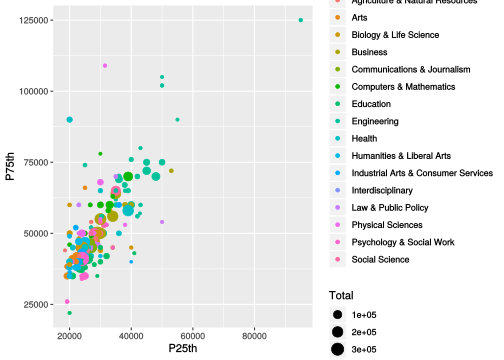
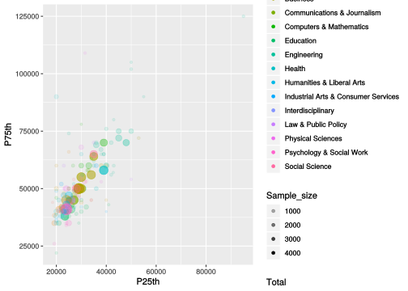
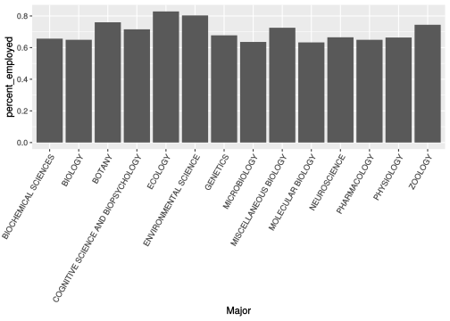
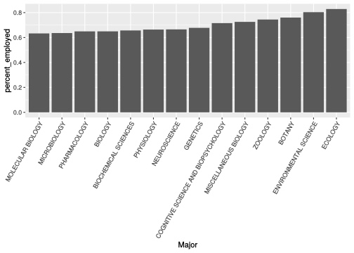

Loading, Exploring and Transforming Data
View as a slideshow.
Data
In today’s exercise we’re going to be exploring a relatively simple data set that was compiled for an article at FiveThirtyEight looking at employment for recent college graduates by major using the American Community Survey dataset. Being good data scientists, the folks at FiveThirtyEight open source the data behind their work, often alongside analysis scripts.
As you’ll see this data set is already pretty tidy and ready to work with. For now, we’ll just use the RStudio data Import Wizard to load the data over the web.
In R Studio:
- Click “Import Data Set” on the “Environment” tab.
- Choose “From CSV” (for comma separated **v*alues)
- Use this URL and hit update.
- Check that the file parsed correctly (you should see a table)
- Hit “Import”
You always want to start a new project by giving yourself a few minutes to understand the structure of your data, particularly in a case like this where it’s not data you generated yourself. See the description of data in each column of this data set here.
Signal strength: data dispersion
When you’re doing exploratory data analysis you should always be thinking very intentionally about the relationship between the question you want to ask and what you’re visualizing and how you’re visualizing it. In virtually all cases, the first question you should ask is: what’s the magnitude of the signal? Put another way, how variable are each of the variables? You’ll treat a variable with 1% variation across samples very differently than one with 10-orders of magnitude variation. Let’s take a quick look at some simple summary statistics for each variable in this table.
Like the plot function, R’s summary function is a little bit magical:
summary(recent_grads)Take a moment to digest the output; what did we get?
Let’s think about this data set:
- Is there signal? How disperse are the data for each variable?
- Are there missing data?
- Are all of our vectors of the correct type? What might we want to change?
Before we go on, let’s fix the Major_category variable. To make a factor, use the factor function:
recent_grads$Major_category <- factor(recent_grads$Major_category)Take a moment to unpack what we just did there. See ?factor for additional optional arguments that let you specify an ordering. We’ll talk a lot more about factors in the future.
How does the summary change when this variable is a factor?
Getting the median and quartile ranges for the variables in our data set is useful, but they don’t tell the whole data dispersion story.
To visualize dispersion for a quantitative variable we can use a histogram or density plot. Let’s look at the distribution of median incomes.
library(ggplot2)ggplot(recent_grads, aes(Median)) + geom_density()
What does this plot tell us about median income distribution?
So, we’ve got some income variability to work with! Check data dispersion for other quantitative variables in the data set.
More than two dimensions
As we’ve seen, making 2D scatter plots with geom_points is a great way to visualize the interaction between two quantitative variables; often you’re doing this to ask whether or not they appear to be correlated. But how can we layer in additional information from other quantitative or categorical variables?
As we’ve seen, you can use color to transform a plot like this:
ggplot(recent_grads, aes(P25th, P75th)) + geom_point()
Into one like this:
ggplot(recent_grads, aes(P25th, P75th, color = Major_category)) + geom_point()
He we get discrete colors for each Major_category because it’s a categorical variable (a factor!). If we set color to be a quantitative variable, we’ll get a continuous shading scale:
ggplot(recent_grads, aes(P25th, P75th, color = ShareWomen)) + geom_point()
We can also use point size to visualize additional quantitative variables:
ggplot(recent_grads, aes(P25th, P75th, color = Major_category, size = Total)) + geom_point()
Finally, values can be mapped to alpha to visually “weight” points:
ggplot(recent_grads, aes(P25th, P75th, color = Major_category, size = Total, alpha = Sample_size)) + geom_point()
Finally, you can use shape to change the shape of points, but I would strongly recommend avoiding this for anything other than a categorical variable with a very small number of levels. Otherwise, it’ll be ugly.
Calculating new values
Above, we changed the data type of an existing column when we switched the Major_category variable from being a character vector to a factor vector. We can use exactly the same syntax to add new variables to a table: instead of assigning values into an existing column (which overwrites it), you can assign a new vector into a column with a name that doesn’t exist yet.
Let’s make a new column that holds the percentage of people who are employed for each major:
recent_grads$percent_employed <- recent_grads$Employed / recent_grads$TotalTake a moment to make sure you understand what we did there.
Now make three more columns on your own for:
- Percentage of people with jobs that require a college degree
- Percentage of people with jobs that don’t
- Percentage of people in low wage jobs
We can use any mathematical expression we want on the right hand side of assignment operations. For example if we want to calculate how different each major is from the mean of the employment percentage:
recent_grads$employment_dev <- recent_grads$percent_employed -
mean(recent_grads$percent_employed)Filtering
We’ve already seen some simple examples of how you can use indexing syntax to filter data held in variables. The old-school way of filtering rows in tables is to setup complex indexing operations. The new-school way, which your textbook author advocates, is to use dplyr which is a package that is part of the tidyverse.
You can load dplyr either on it’s own or as part of the tidyverse
library(tidyverse)The dplyr package contains lots of useful tools for transforming data sets including filter.
Let’s use filter to create a table holding data for just the Biology majors:
bio <- filter(recent_grads, Major_category == "Biology & Life Science")Take a look at the resulting table.
Now we have a reasonable number of majors to plot on a categorical axis:
ggplot(bio, aes(Major, percent_employed)) +
geom_bar(stat = 'identity') +
theme(axis.text.x = element_text(angle = 60, hjust = 1))
See ?geom_bar for an explanation of the stat argument and ?theme for an explaination for how I tilted the axis text there.
Re-arranging
That plot was ok, but a little messy looking because the x-axis was arranged alphabetically by major rather than by the percentage employment. The problem is that our Major variable is still a character vector. We’ll need to turn it into an ordered factor. We can easily do this with two other dplyr functions called arrange and mutate.
First, let’s make a new version of the biology major table that is arranged (sorted) by percent_employed:
bio_sorted <- arrange(bio, percent_employed)Take a look at this new table.
Next, since we’re doing things the dplyr way, we’ll use mutate to change the Major column into an ordered factor (you could have used assignment to do this like we did above).
bio_ordered <- mutate( bio_sorted,
Major = factor(Major, levels = Major, ordered = TRUE)
)Take a moment to dissect what we did there. See bio_ordered$Major.
Which makes for a prettier plot:
ggplot(bio_ordered, aes(Major, percent_employed)) +
geom_bar(stat = 'identity') +
theme(axis.text.x = element_text(angle = 60, hjust = 1))
Check out the Data Wrangling Cheat Sheet for lots of great visual examples of how to use functions in dplyr.
The Pipe
If we assemble everything we just did into one code block, we’d have:
bio <- filter(recent_grads, Major_category == "Biology & Life Science")
bio_sorted <- arrange(bio, percent_employed)
bio_ordered <- mutate( bio_sorted,
Major = factor(Major, levels = Major, ordered = TRUE)
)
ggplot(bio_ordered, aes(Major, percent_employed)) +
geom_bar(stat = 'identity') +
theme(axis.text.x = element_text(angle = 60, hjust = 1))That’s a little messy and takes a bit of effort to understand, partly because we are creating a bunch of intermediate variables that we’re only using once. To clean up code blocks like this, the tidyverse recommends using a new kind of operator called the pipe:
%>%The pipe flows data (usually a table) from left to right. Compare this to the above:
recent_grads %>%
filter(Major_category == "Biology & Life Science") %>%
arrange(percent_employed) %>%
mutate(Major = factor(Major, levels = Major, ordered = TRUE)) %>%
ggplot(aes(Major, percent_employed)) +
geom_bar(stat = 'identity') +
theme(axis.text.x = element_text(angle = 60, hjust = 1))Notice how we no longer have to pass the table in as the first argument to each function. The pipe is doing that automatically for us.
For this class you’re welcome to use either style (pipped, or with intermediate variables).